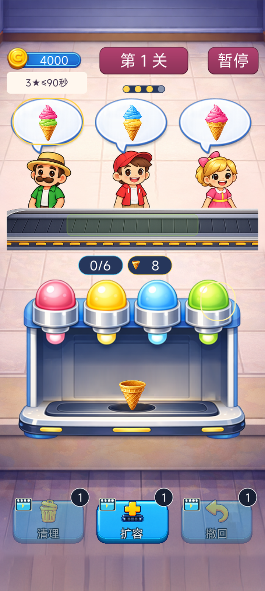
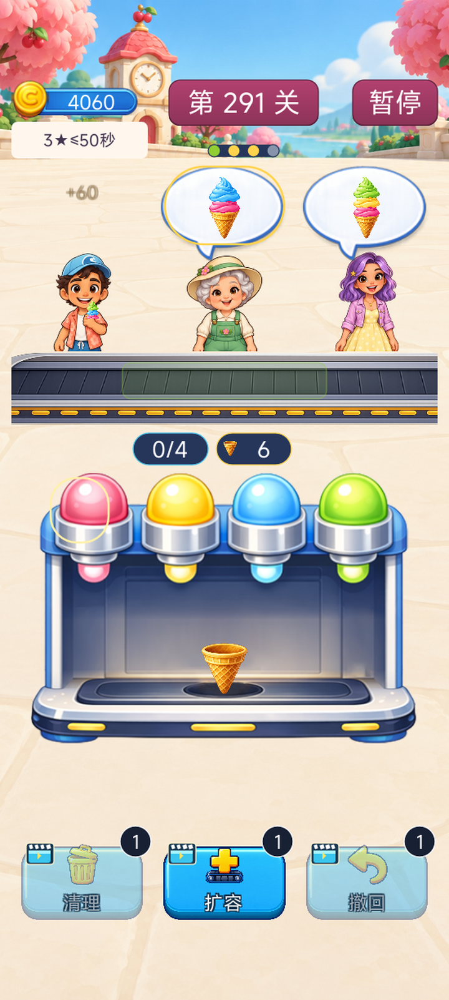

点四个口味，记清每一层
操作只需点选冰球。颜色、层数和中间那一球都可能变，必须从顾客的图文订单辨认从上到下的顺序。


TAPTAP MAKER / 个人 AI 游戏实践
叠球配餐 / 订单匹配 / 关卡挑战
顾客点了一个三层甜筒，搭配看着眼熟，中间那球却换了口味。趁传送带还有空位，按订单叠好再送出去。
TapTap 公开测试 · 2026.10.25 核对
展示图来自 2026.10.25 核对的 TapTap 公开游戏页展示图；保留原图，部分含商店宣传文案，不冒充本次重新运行游戏的实机录制。
点击图片可查看原图。

TAPTAP / 游戏入口
打开 TapTap 游戏页，看看当前可玩的主题与关卡。